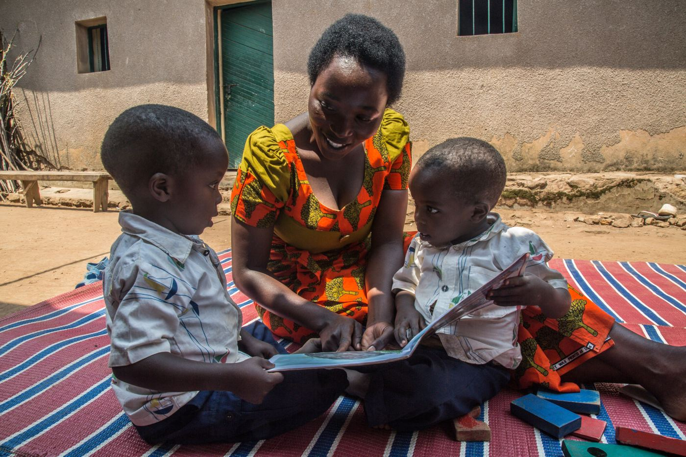
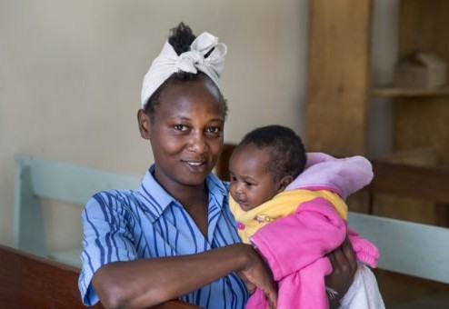
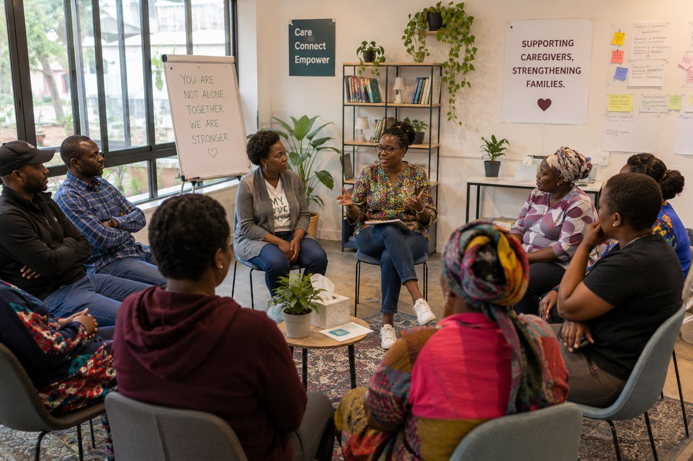
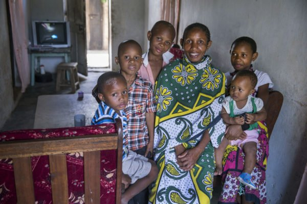

Whole Family Collective equips caregivers with practical, evidence-based skills to support their children with developmental delays or disabilities—starting in Nairobi, Kenya.


Discovering that a child has a developmental delay or disability can leave any caregiver feeling completely overwhelmed and unprepared.
In Kenya, that challenge is compounded by systemic barriers. Stigma frequently drives families into isolation, while therapy and specialized support remain rare and financially unattainable for most. Caregivers often shoulder this immense burden alone—while navigating emotional burnout with daily economic survival. They are left carrying enormous responsibility with little practical support, asking:
But numbers only tell half the story.
Behind these numbers is a caregiver trying to understand why their child isn't speaking. Wondering whether they're doing enough. Feeling exhausted after advocating, teaching, and caring for their child.
A child’s development doesn't happen only in clinics or classrooms—it happens at home during ordinary moments: playing, eating, and getting dressed.
By equipping caregivers during these daily routines, we turn every day into an opportunity for growth.

Illustrative imageWe are launching with the World Health Organization’s Caregiver Skills Training (WHO CST)—an evidence-based program designed for families of children with developmental delays or disabilities, especially in communities with limited access to specialized care.
Delivered by trained local facilitators, CST equips caregivers with practical strategies to support communication, engagement, daily living skills, behavior, and wellbeing through everyday routines.
Field-tested across multiple WHO regions
Developed through research and extensive consultation with caregivers, providers, experts, and family advocates
Built for delivery by trained non-specialists where specialist care is limited
Understand developmental milestones, strengths, and specific needs.
Recognize everyday opportunities to support their child.
Apply practical, evidence-based strategies during everyday routines.
Make informed decisions and advocate for their family.
Build resilience, reduce isolation, and sustain their own health and wellbeing.
Build relationships with other caregivers, practitioners, and community resources.
Our work starts where the global evidence ends.
We want to understand what it takes to implement evidence-based caregiver support well in Nairobi—what works, what needs to adapt, what it costs, and how it can become sustainable within existing community and public systems.

Kenya is at an important moment for disability inclusion and early childhood development.
With the adoption of the 2024 Persons with Disabilities National Policy, the 2025 Persons with Disabilities Act, and the 2025–2027 Joint Disability Inclusion Strategy, national policy alignment has never been stronger.
The structural foundation is in place. The priority now is implementation.
Kenya already has a vibrant ecosystem of organizations working across these issues. We want to partner with local leaders to strengthen what’s already there.
We start in Nairobi, where high community need meets strong institutional infrastructure. Here, we can test and refine our approach alongside families and local partners, and build toward sustainable expansion across Kenya.
We follow the evidence.
We use rigorous research, measure what happens in practice, and change course when the evidence changes.
We build with, not for.
We listen to caregivers, practitioners, and local leaders—and design alongside the people closest to the problem.
We strengthen what already exists.
We build local capacity, partner where others are better positioned, and work toward sustainable systems rather than parallel ones.
We put caregivers at the center, treat them with dignity, and provide practical support that fits into everyday family life.
We strengthen the networks already supporting families, build local capacity, and work alongside community and faith-based organizations before expanding into broader public-sector partnerships.
We generate honest evidence about what works, what it costs, and what it takes to sustain effective support at scale.
If you share our conviction that families deserve better, let’s build together.
For organizations, researchers, and community leaders driving local impact
For donors and funders expanding evidence-based support for families
For builders ready to shape this work from the ground up